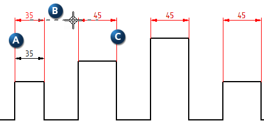
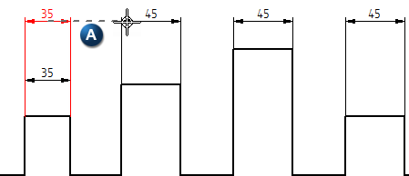

Maintain Alignment Set command
Use the Maintain Alignment Set command while initially placing or modifying linear dimensions to simultaneously align dimensions and create alignment sets.
Maintain Alignment Set can be turned on or off in the Dimensions group on the ribbon. There is no associated command bar.
-
The default state of Maintain Alignment Set is on.
-
If you turn Maintain Alignment Set off, it will stay off until you turn it on again. This setting is a user preference in all environments with the exception of Draft. Draft has its own user preference for this command.
Creating alignment sets
When you turn Maintain Alignment Set on and initially place an alignment set, a dimension (A) can be aligned (B) with another dimension of the same type (C). An alignment set consisting of dimensions A and C is created in the process.

When you turn Maintain Alignment Set off, dimensions can be aligned (chained or stacked) with existing dimensions by using alignment indicators (A). However, because the command is off, the dimensions are not added to an alignment set or create an alignment set.

If Maintain Alignment Set is turned off, it does not affect existing alignment sets.